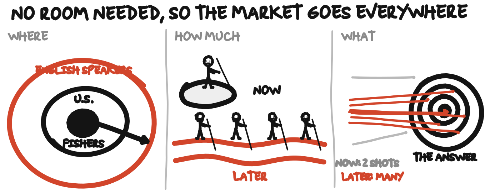
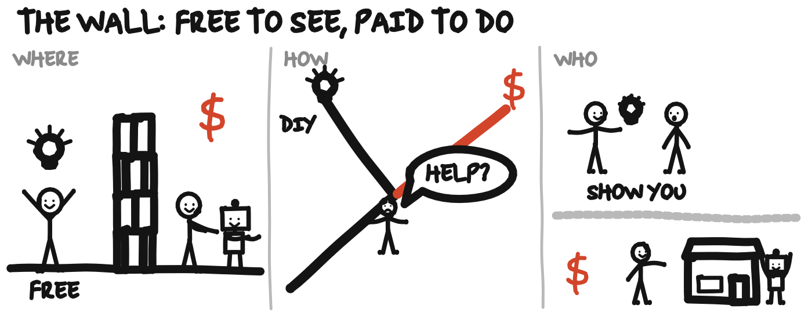
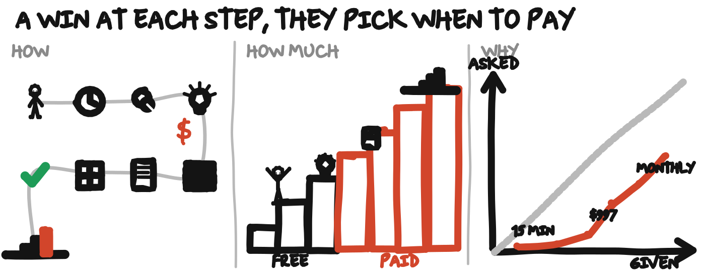
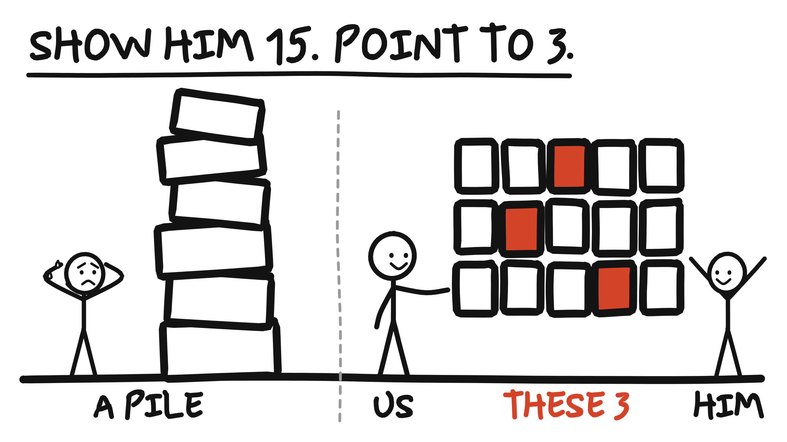
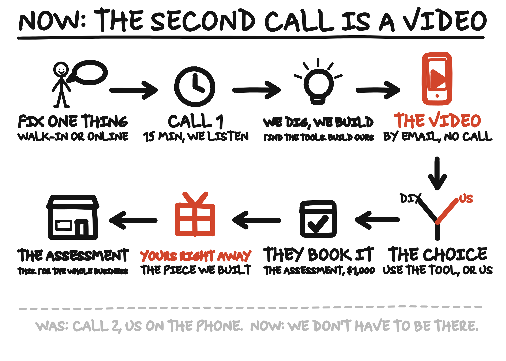
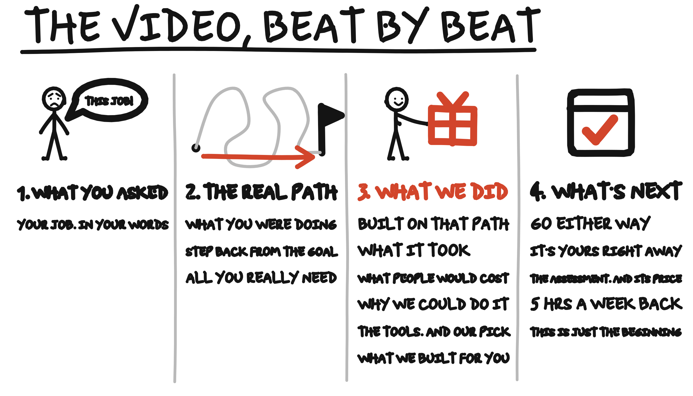
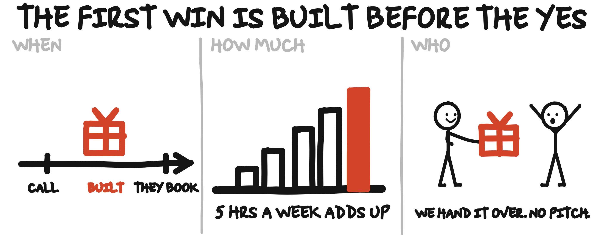

2 Guys and a Genie
2 Guys and a GenieTeam Reference · Two Pages Made One On Nov 21, 2026
The Market Domination Plan
This is the plan. One page, two parts, so the three of us are always looking at the same thing.
How the two fit: Part 2 is how we get in front of every local owner. Part 1 is the road one owner walks with us once we are.
Where the two disagree, Part 1 is newer.
Part 1 · Started Nov 18 · Updated Nov 20What We're Doing Right NowWhere we're taking 2 Guys: the first ask, the road after it, and what's built so far.
This page is the picture behind everything we're working on right now.
Read it once and you'll know what's changing, why, and what comes next.
The change, in one line:
Our first ask stops being "come to our night."
It becomes "let us fix one thing in your business."
The night stays. It just becomes a bonus.
New on Nov 19: what's built so far, and what we found about the offer.
New on Nov 20: the second call becomes a video made just for them.
How It Works Today
Everything Goes Through One Room.

Every road leads to the free night at Launch Fishers.
No night, no money.
And because people have to drive there, we can only reach people near Fishers.
After the night, we ask people to book Jimmy without giving them a clear reason why. Then the free help piles up with no limit.
How It Will Work
A Win At Every Step.

- We offer to fix one thing. In person, or online, where they book the 15 minutes themselves.
- Fifteen minutes on the phone. We mostly listen.
- Between the calls, Jimmy digs and finds one tool that fixes it.
- Second call: we hand them the fix, free. (Changed Nov 20: this becomes a video we send, not a call. See below.)
- Then one honest question: "Do you know what to do, or do you want help?"
- Help starts with a paid meeting. We come back with everything we found that would work, and the few we'd use. (Changed Nov 19. It was an assessment. The drawing above still says so.)
- We sort everything we found into four boxes: big wins that are easy, big wins that take work, small easy ones, and what to skip. They pick what we do first.
- We start on one or two fixes. An idea on the table: if we don't save them at least five hours a week, we didn't deliver.
- Then the monthly: we keep working in their business every month. It runs on a dashboard of their own numbers, so everyone can see it working and what comes next.
The emails and the night are side doors. They feed the path. They aren't steps in it.
The night becomes a bonus for anyone in the path: meet other owners, see what's working, get help on your own business, and there's food.
Why It Matters · 1
The Money No Longer Waits For A Room.

Today the first dollar comes after the night.
In the new shape it can come after two short calls on a phone.
Why It Matters · 2
No Room Needed, So The Market Goes Everywhere.

Once the business doesn't depend on people driving to Fishers, we can advertise to small businesses anywhere in the U.S.
Honestly, anywhere they speak English.
It all happens on calls and screens, so it works for a business anywhere.
That's a far bigger market. And a free fix over the phone is an easier yes than giving up an evening, so more of the people who see an ad should become leads.
What we don't know yet: whether those leads are worth as much as local ones. They might be less qualified.
We don't have the answer from the room either. This gets us more shots at the answer, faster.
Why It Matters · 3
The Wall: Free To See, Paid To Do.

We'll show anyone what's possible, free.
If they want our hands on it, that costs money.
And it's always clear which side of the wall they're on.
Why It Matters · 4
A Win At Each Step. They Pick When To Pay.

Every step hands the owner something real before we ask for the next thing.
They move from free to paid when they're ready.
Why It Matters · 5
Off The Shelf Doesn't Stick. Custom Does.

When owners grab an AI tool off the shelf, or try it with no structure, it doesn't stick.
We learn how their business actually works first. Then we build for that business, and only that business.
That's why every client on our services page looks so different.
Built So Far · Nov 18 To 19 · Updated Thursday Noon
What's Done, In The Order It Happened.
- This page. The picture of the whole change, with the doodles.
- The menu. Every way we work with a business, in the order most owners take it, with a typical price range on each. Linked from the bottom of every page. See it here.
- What to say. A short walk-in, a full walk-in, a phone call, a voicemail, what to ask on the 15 minutes, and one answer for "what does it cost?" See it here.
- Slydial first. Jimmy's voicemail, dropped without ringing their phone. Step 1 for every shop, with a button in Leads. See it here.
- A sign-up in small steps. One small yes at a time: tap the job you want gone, name and number, pick a time. Then two free bonuses: Jimmy's daily AI email, and a seat at the Dec 10 night. A demo. Nothing gets sent or booked. See it here.
- A demo home page that leads to the call. "Tell Us The One Job You Hate Doing. We'll Show You How To Eliminate It." Maestro's is the example. The owner is the boss at every step. The live home page hasn't changed. See it here.
- The offer after the free fix. Worked on late Wednesday night. Not finished. What we found is below.
- The demo pages, rewritten around what we found. Thursday morning. The home page and the sign-up now say what we actually do for a busy owner: we know the tools, we tell him which one fits his business, and if the right one isn't out there, we build it. The steps are now "You Tap. You Talk. You Pick. You Keep It." Two weak statistics came out. See the home page here. See the sign-up here.
- Bruce's case study videos. Jimmy sent two videos of Bruce the piano guy, plus his doodle method. All three are in the Jimmy Brain. The long one is 18 minutes and still needs an edit. See them here.
- The meeting page. Every item now opens and closes on its own. Jimmy's and Paul's items come in through agent mail and go on the same page. See today's page here.
Still open on the demo page, to decide together:
- Who sets the tool up, us or the owner? The page says the job is "gone," and it says "we'll show you how."
- Can we stand behind "Knowing them is our job"?
- Answered Nov 20: "If we have to build it, this one's on us" came off the pages. The offer now is an assessment, plus the thing we already built that they use right away, then they choose which way to go.
- Better statistics. Being looked for now.
- One real moment from Paul, in his own words, for the box about him.
What We Found · Nov 19
Don't Hand Him A Pile. Show Him 15 And Point To 3.

Daegan spent Wednesday studying how other people sell AI help to small businesses.
The common one is a report: about $999, delivered in 48 hours, with "5 hours a week back or a refund."
Then he ran his own irresistible offer process on ours, the direct response way: stack up everything they could want.
It didn't fit the person we're selling to.
The Offer That Works On A Tired Owner
A direct response offer is built for someone who showed up hungry. He's in the room, he's leaning in, and a stack of everything he could want makes him say yes.
A local owner at the end of his day is not that person. He's tired and a little fuzzy. He's asking one small question: will this help my business? Pile a huge promise on him and he doesn't get excited. He gets tired, and he expects to watch you fail to deliver it.
Nobody goes looking for the guy who says "we could do that for you." What everybody hopes to find is the person whose answer goes past what they knew to ask.
So he asks for one thing. You show him everything that would work. You tell him which few you'd use. Then you say what a friend would say: I could do better than all of these.
His reaction is the whole sale: "That's better than I could have asked you for."
In the regular human world, that is the irresistible offer.
The three things we are to him:
- Guide. Here is everything that works for what you're trying to do.
- Expert. Here are the few I think are best, and why.
- Friend. I could do better than all of these. That line is what leads from tools that already exist to us building something for him.
The same shape at every step. The owner picks every time:
- Free. He picks the job he hates. We come back and show him how to eliminate it.
- Paid. We show him everything we found, and the few we'd use. He picks.
- Monthly. He picks the next one.
Settled: the paid step is a meeting, not an assessment.
Not settled: the price of that meeting, and what the monthly looks like.
What We Found · Nov 20
The Second Call Becomes A Video Made Just For Them.

Status: this is the direction Daegan set on Nov 20. The items under "Still open" at the bottom are not decided, so nothing here is ready to build yet.
Daegan watched the video Jimmy's Claude made for Ian, start to finish. (Ian sells sponsorships for the Indy Fuel. Jimmy built him a tool that puts new sponsors to contact on his phone every morning.)
It answered a question we've had open: how do we put the paid step, the assessment, in front of someone without us having to sell it?
Step 4 in "How It Will Work" above says the second call is where we hand them the fix.
New: there is no second call. After the 15 minutes we do the research, build one custom piece for the job they named, and send what we found.
It's an email and a video, made only for them.
Nobody has to be on the phone. We don't have to do the selling. The video does it.
And our home page and ads can say so: "15 minutes. Then we send you what we found." With a video like Ian's as the example of what to expect.
That's less pressure for the owner, and something to look forward to.
The Video, Beat By Beat

- "Here's what you asked us for." The one job they want gone, in their own words.
- "Here's what it took." Everything we had to do, in broad strokes. This is where the value builds.
- "Here's what that would cost with people." The real hours a human team would need to do the same work.
- "Here's why we could do it." People who are very good at marketing and AI, and the system we've built.
- "Here are the tools out there." The one we'd use in their case and why, and their first step. That's what we promised on the 15 minutes, and it's theirs free.
- "Here's what we built for you." The custom piece, shown working in the video, and how they'd use it each morning.
- "You can go either way." The off-the-shelf tool is right there, go use it. Or we really get to work on your business.
- "The custom piece is yours right away." It's the first thing they get, as soon as the assessment is scheduled.
- "Here's the assessment." What happens in it, what happens after, the price and the value.
- "The guarantee is already met." The custom piece buys back at least five hours a week, every week. They've already watched it work. (This is the five-hours idea from "How It Will Work" above.)
- "This is just the beginning." That was one 15-minute call. In the assessment we do this for the whole business.
Beats 1, 2 and 6 are what Ian's video already does well. Everything else, the tools and the whole close, is what Daegan added after watching it.
Worth keeping from Ian's video: it opens on his own line ("If I see a deer, I can shoot it"), it shows the exact steps for tomorrow morning, and it says what the tool will never do.
Why this is the offer.

We give them exactly what they asked for.
Then we show them something better than the tool: a custom piece we already built.
They've watched it work before we ask for anything.
And it's in their hands the moment the assessment is scheduled.
Custom. Specific. And we did what we said we'd do.
Daegan's read: this is the irresistible offer we were looking for.
The price: we test it from the start.
Corey Ganim charges $1,000 for his assessment. There may be a reason for that number when it comes to getting a yes.
Daegan's read: with a custom video in front of it, ours can be at least $2,000.
Payments are fine. The figures he's playing with, none settled: one payment of $2,000. Two payments of $1,000, or $1,050. Three payments of $700, or $750.
So we go out of the gate with the test running, client by client, and see what happens. It doesn't have to be one standing price.
Still open, to decide together:
- Ian's video had seven weeks of work behind it. After one 15-minute call, what stands in for "here's what it took"?
- How long the video should be. Ian's runs ten and a half minutes.
- Does the custom piece hand over when they book the assessment, or when they pay?
- The five hours: how we work out the number for each owner, and what we say when a piece saves less.
- How the owner gets from the email to booked with no call: the link, the booking page, and who answers their questions.
- The name and price of the paid step. On Nov 19 this page called it a paid meeting. On Nov 20 Daegan called it the assessment, with the price on test (see just above). The earlier lines on this page haven't been changed to match.
- Who makes each video, and how fast. Jimmy's Claude and Daegan's Claude are each adapting what was built for Ian so Jimmy and Paul can use it on the leads in our database. The two versions still need to be lined up.
- Ian's video is still marked for Jimmy to review first. It goes on our public pages after Jimmy clears it and Ian says yes.
The Work, In Order
What We're Building Next.

- Catch the guys up. This page. Done.
- Firm up the flow. The drawings above, made final.
- The walk-in script. A softer first hello, plus a one-page card of what to ask on the 15-minute call. Paul does the walk-ins, so he reads it first. Written Nov 18, with the phone, voicemail and Slydial scripts. See it here.
- The website. Starting with a menu of what we offer and how fees are worked out. The menu is live. A demo home page and sign-up are built. The live home page hasn't changed.
- Emails after the call. A new series for people who've done the 15 minutes. Not built yet.
- The dashboard. One real example first, likely for Jamon, our handyman client.
Still open, Daegan's call: the paid step's price (it's a meeting now, not an assessment), what the monthly looks like, the five-hours-a-week promise, prices on the site, and whether the script names Carmel or Fishers.
Part 2 · Started Nov 8 · Updated Nov 16The Whole MapHow every piece feeds the next, from finding a business to being everywhere it looks.
- ✓TracksDone
- ✓Find the leakDone
- 2The giftNext
- 3Feed the pool
- 4Everywhere
- 5Hand goes up
0Lay The Tracks First ✓
Done. The tags went on weeks ago, so every visitor to a front-facing page is already being counted. This is the plan having happened, not a step still ahead.
Home, What We Do, the meetup pages, Proof, the Jamon story, the stories, Ideas, Book, Order, Contact, Thanks, Share, Privacy and Terms on 2guysandagenie.com. The same four are on daegansmith.me.
- Meta pixel: 1965691120685809
- Google Ads tag: AW-411908051
- LinkedIn Insight Tag (Partner ID): 11296761
- TikTok pixel: DBP1AR3C77U9PB4O8CE0
The pages made for one person (their kit, their mock-ups, the agreement, the welcome and report pages) now carry the same four tags. If a client passes their page to a friend or another owner, we catch that referral too.
Not tagged: the team pages only (Admin, Meetings, Leads Portal, this page, drafts).
1Find Them, Find The Leak ✓
Walk in knowing something specific about their business that's costing them money.
Updated Nov 16: about 1,800 owner-run businesses found inside 30 miles of Launch Fishers, swept by place. 11 graded A, 189 graded B, 90 worth a visit. The pilot before it: 50 home-service businesses, 41 good targets.
Google reviews (problems + owner's first name), then the website (dead links, wrong phone, no booking). Facebook and Yelp checked by hand.
Done for the 200 A's and B's as of Nov 16. Each shop in the Leads Portal shows why it is worth going to and what we found, with quick links to its website, Google reviews, Facebook, Yelp and Instagram. Open the Leads Portal (demo)
Rank the finding by money
- Today's money: dead contact link, phone mismatch, calls not returned
- This month's: no booking, empty testimonials, site from 2019
- Background: old copyright, typos (proof we looked)
For every shop on the list: Jimmy leaves a short Slydial voicemail introducing himself (it goes straight to voicemail, no ring). The next day, call or walk in. The goal of every touch: book the free 15 minutes.
- Day 1: Slydial, live, in Jimmy's voice. Note it in Leads.
- Day 2: call (phone script) or walk in (walk-in script).
- Book the 15 minutes. Invite them to the free night.
Four short scripts (walk-in short, walk-in full, phone, voicemail) and the five questions for the 15 minutes. Introduce ourselves, fix one thing, invite them to the night.
So every business's report runs on its own, not on anyone's evening.
The skill is called prospect-finder. Any of our Claudes can run a round with it and add to the same list without repeating an area. Open the skill (copy and paste) · How we built the list
How to run it without repeating what's done
- 1. Open the skill page, tap Copy The Skill, and paste it into your Claude with "Make this a skill called prospect-finder". Then say "run a batch".
- 2. Open the "Areas Covered" tab of the Local Business Database sheet. It lists every area already swept.
- 3. Pick an area that is not on it, inside 30 miles of Launch Fishers. Add a row with your name and "in progress" before you start.
- 4. Your Claude drops any shop already on the sheet, so nothing is researched twice.
- 5. Results go in a new tab. New A's and B's are added as new rows on "Worth Going To". Nobody edits another person's rows.
- 6. Mark the area "done", and send what the round taught to Daegan so the skill is updated in one place.
The sheet and the write-up open only for people Daegan has shared them with.
2The Gift: Money Leak Report
"Here are the 3 things on your site and reviews costing you calls this week." The gift is done as the work is done.
The walk-in hook. The proof we're good. A free sample of the paid assessment.
Nobody likes hearing their baby's ugly. Jamon almost decked the guy who said it, then his business went from about $15K to over $50K a month. Then: here's yours, and here's it fixed.
Every channel gets its own tagged link to it, so we see which one gets owners to click.
3Feed The Pool
Everything below ends at a tagged page, so every yes, scan and view adds to the same audiences.
They gave us their details. Meta + Google, plus a lookalike.
Jamon video-views ad to owners within 50 to 100 miles. Pennies a view.
Paul with the report and a QR code. Doesn't have to feel like marketing.
The finding plus the link.
Facebook, Instagram, LinkedIn, TikTok. One person at a time, his business named.
Chamber directors, BNI leaders, HOA presidents. One yes, hundreds of owners.
Names stripped. Owners start checking their own sites.
"Built by 2 Guys" footer + every before-and-after.
4The Pool → Omnipresence
Each network switches on when its pool crosses its minimum. From then on he sees us everywhere he looks.
Ads to the pool feel personal without naming anyone: Jamon, "your site's leaking money," the next free night. Third-party networks (AdRoll, StackAdapt) only once the pool justifies $500+ a month. Platform tags first because iPhones block the cookie-based ones.
5The Hand Goes Up
The free night, the paid assessment, a client. The report already showed him what we'd fix.
Since Nov 18: the first yes is the free 15 minutes, and the night is a bonus. Part 1 has the road from there. Go to Part 1.
Daegan and Jimmy build. Each finished client becomes a before-and-after and a "Built by 2 Guys" link.
↺ The Loop
Every client is new proof → better reports, better ads, more content → a bigger pool → more hands up. Every channel's tagged link tells us which prong to feed next.
If demand outruns the two of you, the lever moves to price and choosing who gets in, not more reach.
Do These First
- ✓ Done.
Say "go" on the Meta pixel for every page. - ✓ Done.
Pick whose login owns the ad accounts, then sign up for Google, LinkedIn, TikTok and send the IDs.All four IDs are in Stage 0. - ☐ Upload the registrant list to Meta and Google.
- ☐ Launch the Jamon video-views ad to owners within 50 to 100 miles. Waits on the audiences.
- ✓ Half done. The research skill is built and has run five rounds. ☐ The Money Leak Report is next.
Full detail lives in the project doc "Local Business Database / Pilot 1 Findings (Nov 8)." Audience minimums researched Nov 8, 2026.